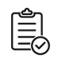

Monitor Plus® es un avanzado sistema de análisis y monitoreo multipropósito que funciona hasta en tiempo real por medio de un ensamble de técnicas de Machine Learning y modelos expertos.
La Suite de Cumplimiento de Monitor Plus® se constituye de soluciones comprobadas que monitorean y analizan transacciones con un enfoque basado en riesgo (EBR) para:
Prevención de Lavado de Activos y Financiamiento del Terrorismo.
Gestión Anticorrupción y soborno.
Gestión de comercio internacional.
Cumplimiento FATCA/CRS.
Gestión cualitativa y cuantitativa de riesgos.
Score de riesgo y mitigación de riesgos de personas.
Debida diligencia (DDS, DDA).
Segmentación de factores de riesgo.
Vinculación de clientes.
Análisis de relaciones internas escondidas.
Análisis de origen y destino de fondos.
KYC, KYE, KY3 y beneficiario final.
Descarga, administración y validación contra listas (OFAC, CIA, ONU, PEPs, etc.)
Herramientas de análisis gráfico y afinamiento de los módulos.
Gestor de calidad de datos para optimización de gestión.
Monitor Plus 4.2.4 cuenta con validación PCI PA-DSS 3.2
|
Productos |
|
|
Monitor Plus ACRM+™ (Advanced Compliance Risk Manager) Gestión de prevención de lavado de activos y financiamiento del terrorismo. KYC, KYE, KY3, beneficiario final. Vinculación de clientes, score de riesgo y monitoreo continuo de comportamiento. Debida diligencia simplificada y ampliada. Validación contra listas. Segmentación K-Prototype. Flujo de origen y destino de transacciones. Análisis de relaciones no declaradas. Reporte de operaciones sospechosas (ROS). |
|
|
Monitor Plus ICM™ (Intertrade Control Manager) Gestión y control de transferencias (locales e internacionales) en tiempo real para prevención de lavado de activos, fraude y financiamiento del terrorismo, y riesgo operativo. Descarga, administración y validación de listas. Automatización de controles y case management. Bitácora para auditoría y reportes de operaciones sospechosas (ROS). |
|
|
Cumplimiento de regulaciones de prevención de evasión fiscal. Análisis y monitoreo de cuentas nuevas y existentes. Validación de información del cliente. Score FATCA/CRS. Debida diligencia, generación y gestión de reportes. |
|
|
Monitor Plus CRM™ (Compliance Risk Manager) Gestión de riesgos para la optimización controles y la gestión de cumplimiento. Definición de factores y subfactores de riesgo. Identificación y evaluación de riesgos. Gestión y automatización de mitigación. Evaluación de tratamiento, matrices de riesgo y mapas de calor. |
|
|
Monitor Plus ABC™ (Anti-Bribery & Corruption Manager) Análisis continuo en tiempo real de operaciones con alto riesgo de corrupción y soborno. Análisis por cliente y empleado. Automatización de actividades de control. Análisis transaccional y correlación de eventos. |
|
|  |
Monitor Plus DQM™ (Data Quality Manager) Optimización de gestiones y detección, prevención de errores y datos fraudulentos. Aseguramiento de la calidad de datos en tiempo real (exactitud, consistencia, completitud y vigencia) por medio de validación de baja fricción con el cliente |